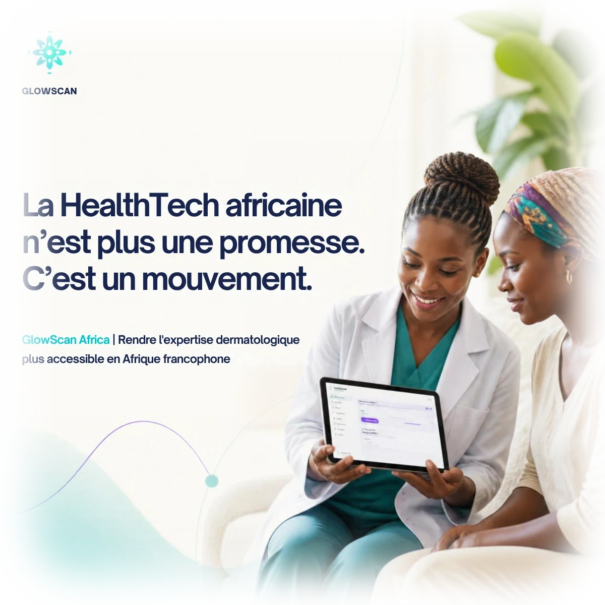

Dermatologie numérique · Afrique
Vos patients viennent à vous. Votre expertise va partout en Afrique.
GlowScan Derm numérise votre cabinet, rédige votre compte rendu en 3 minutes et l'envoie signé sur le WhatsApp du patient. Vous consultez, GlowScan documente.
Sans carte bancaire · paiement Orange Money ou MTN MoMo
Dermatologues actifs au Cameroun, au Bénin et en RDC
Présenté au Congrès SODAF — Ouagadougou 2026
Il est 19 h. Il vous reste 3 dossiers à écrire à la main.
Chaque jour, l'administratif vous prend le temps que vous devriez passer avec vos patients.
{{ p.big }}
{{ p.t }}
{{ p.s }}
Ce que GlowScan Derm fait pour vous
Tout votre cabinet. Dans votre téléphone.
{{ f.n }}
{{ f.t }}
{{ f.s }}
Comment ça marche
{{ s.n }}
{{ s.t }}
{{ s.d }}
{{ flowNote }}
Le réseau GlowScan Derm
Là où il n'y a pas de dermatologue, vous devenez le référent.
Des infirmiers et des médecins de terrain vous envoient leurs cas. Vous validez ou corrigez, et votre correction devient leur leçon. Vous êtes payé pour chaque avis.
{{ n.t }}
Avis relais · CSI de Mokolo
Plaques du cuir chevelu, garçon de 7 ans
Relais : peladeIA : teigne 82 %
Votre correction : plaques rondes + squames + fratrie touchée = teigne jusqu'à preuve du contraire.
60 %pour vous
20 %pour le relais
20 %pour GlowScan
GlowScan ne diagnostique pas. GlowScan documente.
Vous restez le médecin. Toujours.
Un seul tarif
Votre abonnement se paie avec vos avis.
Vos gains en consultations et en avis sont déduits automatiquement. Avec 6 avis par mois, vous ne payez plus rien.
10 000FCFA / mois
14 jours gratuits · sans engagement
Questions fréquentes
{{ f.a }}